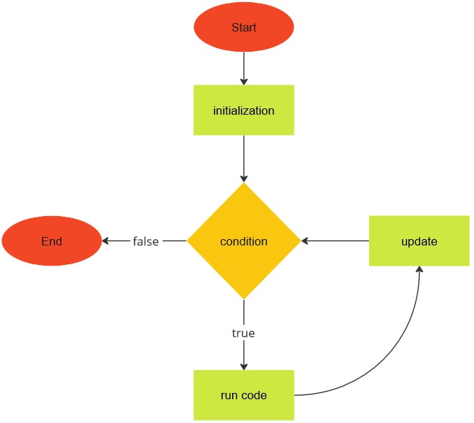
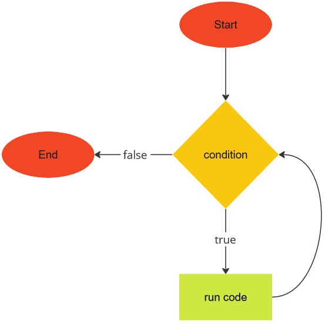

Can you repeat that?
We now discuss what a computer does best: repeat something over and over again. The looping mechanism, or ability to repeat, allows a computer to perform mindless tasks time and again that would otherwise render you bored to tears. Let me repeat again: repetition is good.
for
One of the looping mechanisms most programming languages provide is the for
statement, otherwise known as the for loop. In JavaScript, the for statement
is structured as follows:
for (initialization; condition; update) {
// run code
}
The structure of the for loop is illustrated in the image below:

The initialization is an expression that is evaluated before the loop begins.
You often want the initialization to declare a variable whose sole purpose is
to be the loop counter. The condition is an expression that is evaluated prior
to each iteration of the loop. The condition should evaluate to a boolean. If
the condition evaluates to true, then code within the loop body would be
executed. In case the condition evaluates to false, the loop ends and
execution picks up from the first code statement following the closing brace }
of the for statement. Finally, the update is an expression that is evaluated
at the end of each iteration of the loop. The update typically increments (or
decrements) the loop counter.
Let's use a simple example to help us understand the above description of the
for loop. Consider the following program to output the integers from 0 to 9 to
the terminal.
The initialization is the expression let i = 0. The condition is the
expression i < max, where the variable max has been declared to hold the
integer 10. Finally, the update is the expression i++. Prior to entering the
first iteration of the loop, the condition i < max is evaluated to determine
whether it results in a true value. The value of i is initially 0, hence
the expression i < max evaluates to true. We now enter the loop body for the
first time and the code inside the loop body prints the value of i to the
terminal. We have executed all code we can within the loop body, so we now
evaluate the update expression i++. The expression increments i by 1 and i
now takes on the value 1. Control then jumps to the condition again, where we
evaluate the expression i < max. Again the expression evaluates to true
because 1 is indeed less than 10. We enter the loop body for the second time,
print the integer 1 to the terminal, and the update expression increments the
variable i to 2. Control jumps to the condition and we repeat the above
process. The loop ends when i < max evaluates to false, which occurs when
i holds the value 10. The last value of i printed to the terminal is
therefore 9.
Let's make the above program more interesting. Let's modify the program to sum
all integers from 0 to 9, inclusive. You need a variable to keep track of the
cumulative sum. Declare such a variable outside of, and before, the loop. No
need to modify the initialization, condition, and update portions of the loop.
Each time you enter the loop body, you add the value of i to the cumulative
sum. The program below should do what we wanted.
let and const
In the script sum9.js, why did we declare max as const max
and sum as let sum? Why not const max and const sum? Or let max and
let sum? When you use the keyword const to declare a variable and
immediately assign a value to the variable, JavaScript prohibits you from
reassigning the const variable. It does not matter if you reassign the same
(or a different) value to the const variable. Think of const as constant. A
constant does not change its value. Thus max is a constant. (Does that mean
max is a constant variable? Sounds like an oxymoron does it not?)
Being the inquisitive learner that you are, you modify the program as follows:
You execute the modified script. Then Bitburner (and ultimately JavaScript) yells something like this at you:
Hey, didn't you give
maxthe value10and told me that you don't want to change the value ofmax? Why are you givingmaxa different value now? Can't you make up your mind? That's it. I quit.
That is not really far from the truth. JavaScript does not like the modified
program, gives you the cryptic message shown in the image below, and stops
running the rest of your script. A variable declared using const should stick
to one and only one value.

Let's talk about let. A variable declared with the keyword let can have its
value changed. That is it, really. Short and sweet.
while
While we are on the topic of looping, let's consider another means of repeating
things in JavaScript. The while statement is structured as follows:
while (condition) {
// run code
}
The structure of the while loop is illustrated in the image below:

The loop body is delimited by the open brace { and closing brace }. The
condition should be an expression that evaluates to a boolean. First, the
condition is run. If the condition evaluates to true, then code within the
loop body would run. If the condition evaluates to false, execution would
jump to the code after the closing brace. After running code within the loop
body, the condition would be evaluated again. If the condition evaluates to
true, the above process would be repeated. Otherwise the loop ends.
The for and while loops are similar to each other, so similar in fact that
you can convert code written using one loop statement to code that uses the
other loop statement. By way of example, consider the script
for-int.js above. The for loop of the script can be
written using a while loop like so:
String along some characters
Let's use the while statement to process strings. Recall that each string has
the
length
property, which counts the number of characters in the string. Each character in
a string is associated with an index, an integer starting from 0. The next
character has an index that is 1 greater than the previous character. The
maximum index of any character in the string is the value of length minus 1.
The following illustrates the relationship between the string "abcdef" and the
index of each character.
0 1 2 3 4 5
a b c d e f
The first character a has index 0. The next character is b, which has index
1, etc. The last character f has index 5, which is 1 less than the number of
characters in the string.
Suppose you declare a string like so const s = "Mississippi";. As M is the
first character, its index is 0 and you can access this character like so
s[0]. Notice the index is between the opening [ and closing ] square
brackets. How would you access the second character? The second character has
index 1 because indexing in JavaScript starts from 0. The second character can
therefore be accessed as s[1].
How would you use the string index to count the number of times the character
"i" appears in the string "Mississippi"? You iterate over each character one
at a time. If k is the current index, then the character at index k is
s[k]. Compare s[k] with "i". If the result of the comparison is true,
then you know that "i" occurs at index k. Otherwise "i" does not occur at
index k. Increment the index k, move on to the next character, and perform
the comparison. Repeat the above process until you have considered all
characters of the string. How do you know when to end the process? The maximum
index of the string is the value of the string property length minus 1. Use
this fact as your loop condition. Here is a program that counts the number of
times the character "i" appears in the above string.
Exercises
Exercise 1. Read more about the for and while loops
here
and
here.
Exercise 2. JavaScript has the do...while statement as a third means of
looping. In some cases you might find this looping mechanism useful if you need
to execute some code at least once. Read more about the do...while statement
here.
Exercise 3. Use a while loop to rewrite the script
sum9.js.
Exercise 4. Use a for loop to rewrite the script
mississippi.js.
Exercise 5. Use a for loop to write a program that sums all integers
between 1 and 100, inclusive. Provide a while loop equivalent of your script.
Exercise 6. Print the following pattern to the terminal.
######
######
######
######
Do so in three different ways. One of them must not use a loop.
Exercise 7. Use a loop to output the following pattern to the terminal.
#
##
###
####
#####
Exercise 8. Use a loop to print the multiplication table (from 1 to 12) to the terminal.
Exercise 9. The factorial of a positive integer is defined as . Use a loop to calculate the factorial of 10.
Exercise 10. Write a program to calculate the sum of all numeric digits in
the string "3141592653".